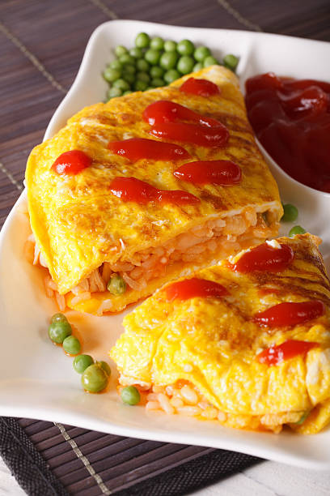

Gyudon
Japanese Beef Rice Bowl
Thinly sliced beef and onions simmered in a sweet and savory sauce, served over a bed of steamed rice

Omurice
Japanese Omelette Rice
An omelette made with fried rice and thin, fried scrambled eggs, usually topped with ketchup
Kare Raisu
Japanese Curry Rice
A hearty, thick curry sauce, often made with a mix of spices and a roux, poured over a bed of fluffy, Japanese short-grain rice

Kaisendon
Japanese Seafood Rice Bowl
A bowl of rice topped with a variety of fresh, raw seafood, often including sashimi like tuna, salmon, and other seafood